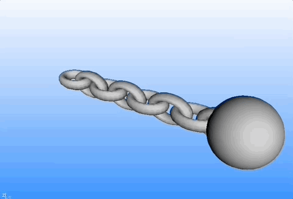

3D Visualization - Learning Reflection
Author: Tony Fu
Date: August 30, 2023
Device: MacBook Pro 16-inch, Late 2021 (M1 Pro)
Code: GitHub
Reference: Chapter 10 Digital Image Processing with C++: Implementing Reference Algorithms with the CImg Library by Tschumperlé, Tilmant, Barra
1. Introduction
1.1 3D Primitives in CImg
CImg has functions to create several types of 3D primitives, including:
sphere3d(): Creates a sphere.torus3d(): Creates a torus.cylinder3d(): Creates a cylinder.box3d(): Creates a box or parallelepiped.
To use these, you generally create a CImg<> object for points and a CImgList<unsigned int> object for primitives, then fill them using these functions:
CImg<> points;
CImgList<unsigned int> primitives;
points = CImg<>::sphere3d(primitives, radius);
1.2 Define Your Own 3D Object
You can define your own 3D object by providing the following four datasets:
- Points (Vertices): A
CImg<>object that holds the 3D coordinates of each vertex. - Primitives: A
CImgList<unsigned int>object that describes how points connect to form primitives like triangles or quadrangles. - Materials (Optional): To specify colors or textures.
- Opacities (Optional): To specify the transparency level of each primitive.
For a simple example, you could define a 3D triangle:
CImg<> points("0,0,0 1,0,0 0,1,0");
CImgList<unsigned int> primitives("3,0,1,2"); // A single triangle using points 0,1,2
1.3 Merging Objects
You can use append_object3d() to merge two 3D objects:
g_points.append_object3d(g_primitives, points, primitives);
1.4 Translate, Rotate, Scale, Shear
These transformations can be applied using methods like:
shift_object3d(dx, dy, dz): Translates the object.rotate_object3d(ax, ay, az, angle): Rotates the object.resize_object3d(sx, sy, sz): Scales the object.shear_object3d(xy, xz, yx, yz, zx, zy): Shears the object.
1.5 Displaying Objects
To display the 3D object, you can use the display_object3d() method:
background.display_object3d("3D Object", points, primitives);
Here, background is a CImg<> object you can create as a background for rendering the 3D scene.
Example
The book's script simple_3d.cpp merge a few toruses and spheres to create a chain with a ball at the end:

Personally, I think it is more worthwhile to study 3D graphics with OpenGL. I will have another repo for that.